Factors that Influence Health: US Life Expectancy:
Life expectancy is a vital indicator that provides insight regarding a population's overall health, and it serves as one of the core indicators of calculating the United Nations Human Development Index across countries. According to the World Health Organization data, life expectancy at birth in the United States is 78.5 years for both sexes in 2019; but when compared to other high-income countries, the United States's life expectancy measured to be 2.4 years lower and ranked 40th in the world (World Health Organization, 2019).
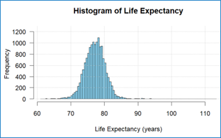
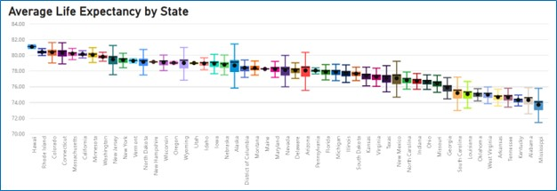
With life expectancy being a primary indicator for a population's overall health, this project aims to determine how lifestyle and socio-economic factors have impacted life expectancy and its disparities among counties (minimum geographical location) within the United States between the years of 2019 to 2023.
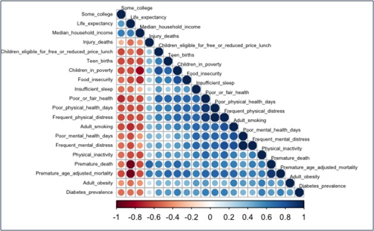
The data used in our study revealed the impact of location on life expectancy. The South region had poor lifestyle behaviors, as we observed from the graphs. As we learned from the literature review, physical and social environments in which people live helped determine the quality of life and the life expectancy. The South region was more rural, less educated, and had the highest percentage of poverty. Comparatively, the West region had the highest life expectancy and was on the other side of the spectrum of the South region for the variables in the study. We also observed during the exploration of the data the South region is the region with the lowest life expectancy with an average of 76.07, while the West region had an average life expectancy about three years higher, in the range of 79.15.
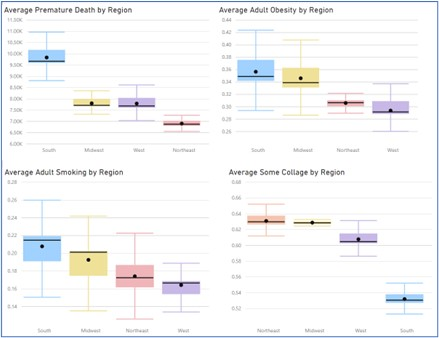
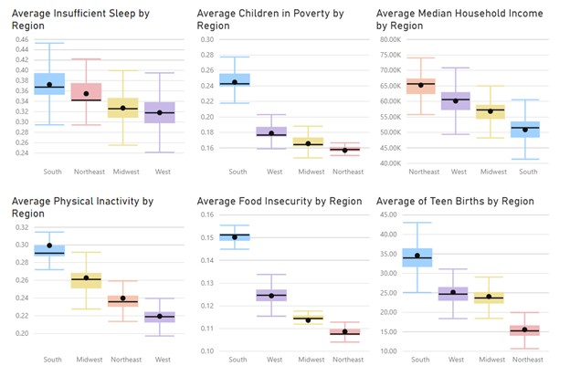
While evaluating the validity of the model, we observed that the residuals were randomly distributed. However, in the QQ plot, we observed tails with high curvature, specifically to the right, which reveals the presence of extreme outliers.
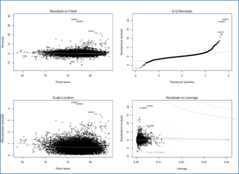
The Residuals vs Leverage graph did not show the presence of any high leverage points. We calculated the Full Model and best subset model, eliminating the outliers, and assessed the validity of the model again.
The R-squared and adjusted R-squared improve from 0.6851 to 0.7798
Lasso approach used a shrinkage technique that would significantly reduce the variance. Lasso eliminated the same variables that were found in the stepwise approach. Evaluating the MSPE and comparing it with the cross-validation ten-fold for both full model and bestsubset model, we saw that Lasso provided a lower MSPE.
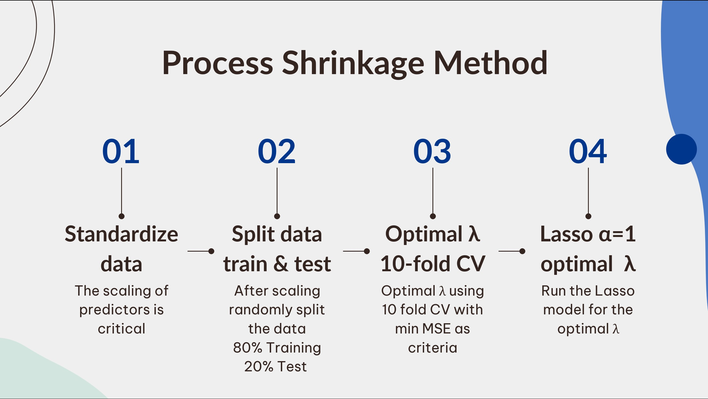
To evaluate the health factor that contributes the most to life expectancy, we picked the Lasso model because it has the lowest Error MSPE = 3.027 and is the model that predicts the average life expectancy in the US more accurately.
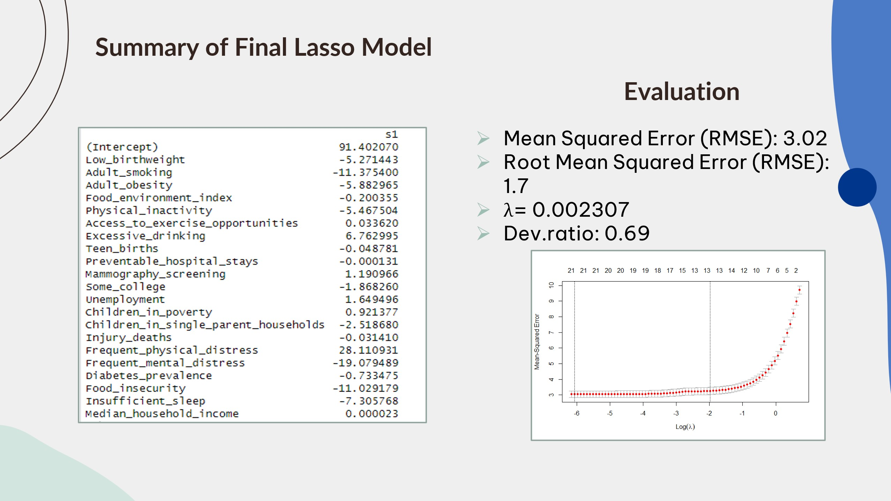
Classification of potential Donors and prediction of Gift Amount:
begin{left}We have been approached by a non-profit organization to build a classification and predictive model that will be used to increase the cost-effectiveness of their current direct marketing campaign. The organization has provided data with a historical background to its direct marketing campaign. Personalized address mailers are sent out to previous donors for $2.00; the average donation gift amount is $14.50 from respondents. However, the campaign is operating at a loss due to low donation rates of 10%. The organization would like for us to take a provided dataset of prior donors to create our analytical models in order to make their direct marketing campaign not operate at a loss.
We assess the potential profit of our study by using the adjusted confusion matrix from the ensemble classification model with the average donation amount from the AutoNeural validation model to calculate various profit-losses, considering with and without opportunity costs. We will then use the percentages of the adjusted confusion matrix to estimate the profit or loss generated by the score data results. We will also consider the lift provided by the score data.
The resulting profit from our model, based on the validation classification data with the score donation value, was $1,695.65. We ignore the opportunity cost from false negatives in our profit evaluation.
Forecast model to predict the demand of Covit-19 vaccine
According to the World Health Organization, Covid-19 is an infectious disease that cause symptoms such as fever, cough, tiredness, and loss of taste or smell. The World Health Organization stated that anyone can get sick with the virus and become extremely sick or die at any age. Covid-19 outbreak goes back to late December 2019 in Wuhan, Hubei, China as mentioned by (Wu et al., 2020). Moreover, (Ybarra, 2022) added that some Covid-19 cases suffer from something called long-term Covid which means some Covid-19 symptoms affect parts of the body such as the lungs, causing trouble in breathing, harsh cough, and shortness of breath. More than a year ago, a vaccine was derived against the Covid-19 virus. 4.4 billion people have had one or more doses, which represents 56% of the world’s population (Mallapaty et al., 2021). In this project, we will study the vaccination process in California and try to predict the booster-eligible population in all California counties.
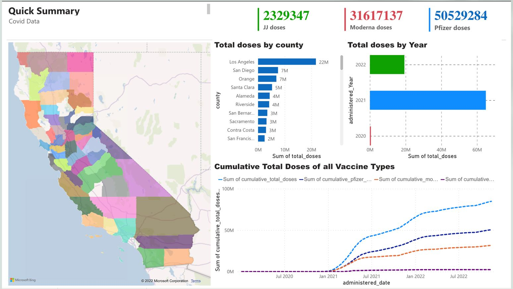
I worked on a model to calculate the demand for vaccines in the state of California. Two models were presented aggregating the data in monthly buckets with 12-month lags as independent variables. In the second model, the data was aggregated in weekly buckets with 4-week lags as independent variables. The data was split into two datasets without breaking the sequence of the dataset, training with 65% of the data and testing with 35% of the remaining values in the dataset. The model was trained using a linear regression algorithm.
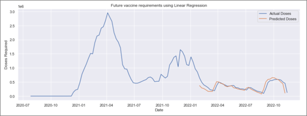
I recommended the model with weekly buckets to provide accurate predictions of future demand.
Salaries, Foreign born vs Native in Texas.
In this project, we evaluate the attributes that influence a worker’s salary in Texas. We proceed with analytics of the data including data exploration and data cleansing.
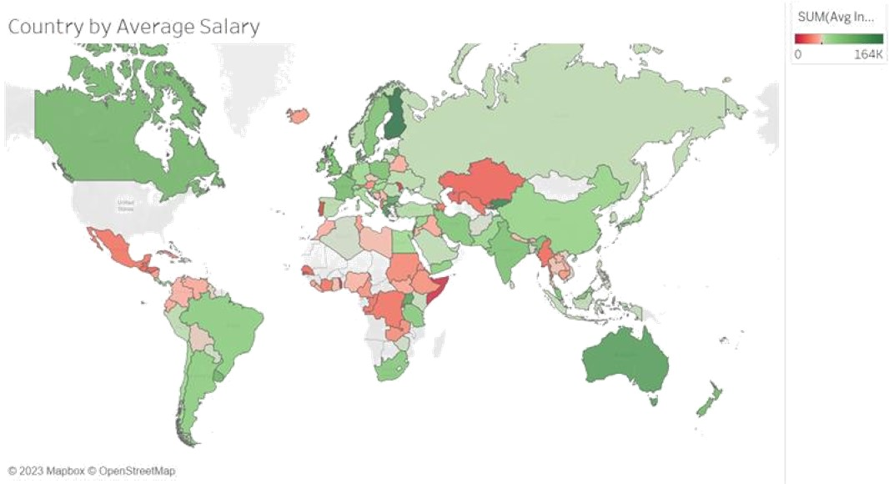
Deep understanding of SCOR model, Lean six-sigma DMAIC methodology, costing/forecasting, process mapping, profitability analysis tools, supply chains, and operations planning. The main attributes evaluated were place of birth, jobs, occupations, income,sex, and educational attainment. For this project we used Google Big Query, Python linear regression, and decision tree in SAS.
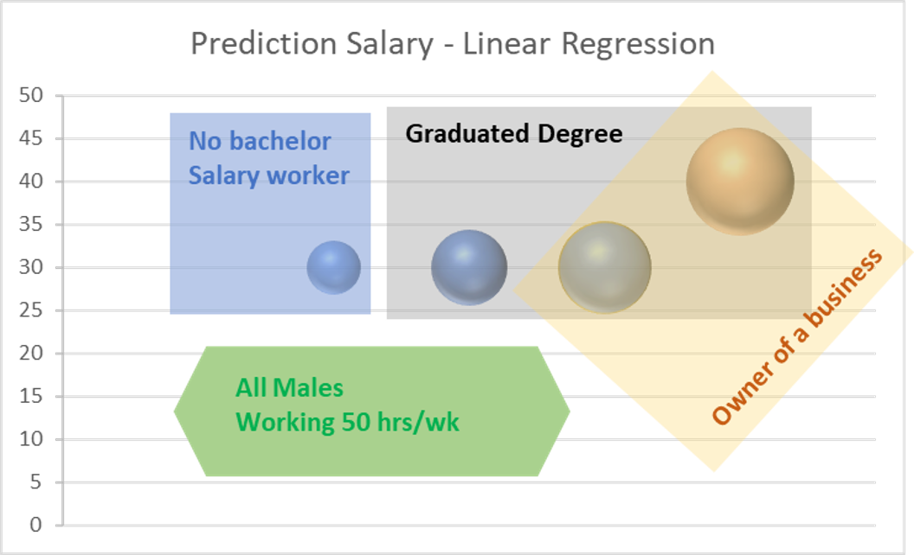
The best salary among the four males was predicted for a foreign male with a graduate degree who runs his own business.